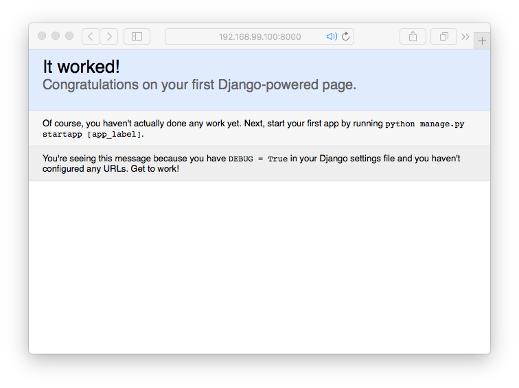

Connecting Docker to PyCharm
Step 1: Create Django Project:
In PyCharm -> File -> New Project -> Django
Use a local interpreter
Step 2:Make PyCharm Docker Interpreter
Preferences -> Project Interpreter
Project Interpreter
Configure Remote Python Interpreter
Docker -> Machine Name
Step 3:Run Django
Click the run Django button and the following image should pop up on your screen.
